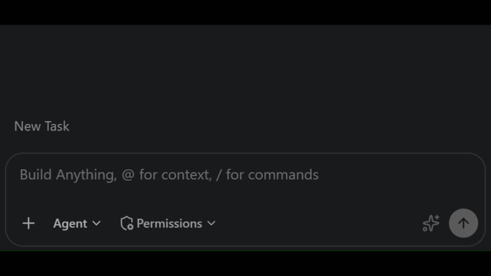

Four tracks. Pick the one that fits where you are today. Click in, grab a prompt, and build something real.
First: Open a Folder
Bob needs an open folder to do anything useful — write code, create files, remember context. Without one, it's just a chat window.
Open Folder in the Explorer panel
In the Explorer panel (left sidebar), click Open Folder. Navigate to your folder and click Select Folder. Bob is ready to go the moment the folder loads.
Use a dedicated, empty folder
Create a fresh, empty folder just for your Bob work — something like ~/bob-workspace. Bob can read every file in the open folder, so keeping it dedicated means it only ever sees what you intentionally put there. Don't open your home directory, Documents, or any folder with sensitive files.
VS Code Explorer — click "Open Folder" to get started
Choose Your Track
Each bubble below is a different path into AI with Bob. Scroll down and click to open any track. There are four to choose from.
Track A
Supply Chain Operations Dashboard
Step into the role of a regional operations director and use Bob to build a live supply chain dashboard — a draggable network map with animated delivery trucks, per-store floor plan views, and a delivery timeline. No coding experience needed.
No experience neededAnimated trucks~30 minFully guided
You're a regional operations director at Winn-Dixie. It's Monday morning and you've just been asked to get ahead of a potential supply chain disruption before the exec briefing at noon. In the next 30 minutes, you'll use Bob to build a fully interactive operations dashboard — a network map with animated delivery trucks driving warehouse-to-store routes in real time, store floor plans you can click into, and a delivery tracker. Just follow the steps below.
Step 1 — Connect to the live data feed
The supply chain data is in winn-dixie-data.json — 3 warehouses, 12 stores, inventory levels, floor plans, and 15 delivery routes. Copy the prompt below and paste it into Bob to get started.
1
Download the data file into your workspace
Copy this prompt and paste it into Bob. It downloads the supply chain data and strips the large map image out of it so the next step runs quickly.
Please do the following two things in my workspace, in order:
1. Download the file at https://vladstol223.github.io/wd.bob/winn-dixie-data.json and save it as `winn-dixie-data.json` in the workspace folder.
2. Once that's done, open the file, set the `map_background.base64` field to an empty string, and save it again. Leave every other field untouched.
Once both steps are complete, confirm the file is saved and tell me you are ready for the next prompt.
Step 2 — Build the network map
Paste this prompt into Bob. It creates dashboard.html with the Florida map, warehouse and store nodes, connecting lines, and pan/zoom.
Bob Prompt — Step 2
Create a new file called `dashboard.html` in my workspace. Fully self-contained — all CSS and JS inline, no external files.
This step builds ONLY the map. Do not add a side panel, delivery table, delivery timeline, truck animation, or any other features — those come in later steps.
**Data:** Read `winn-dixie-data.json` and embed the full contents as `const WD = {...}` at the top of the script. All code reads from `WD`. No fetch or network requests.
**Layout:** The entire page must fit within the browser viewport with no vertical scrolling. Use `height: 100vh` on the body, a fixed-height header (~60px), the map filling all remaining space, and a fixed-height footer (~28px). Do not let the map overflow or push content below the fold.
**Header:** Dark navy (#002147), white text. Title "Winn-Dixie Operations Dashboard", subtitle "Supply Chain Overview". Legend: gold hexagon = Warehouse, colored circle = Store (green ≥70%, yellow 40–69%, red <40%).
**SVG map — critical architecture:**
- Single `<svg id="map-svg" viewBox="0 0 1792 1536" preserveAspectRatio="xMidYMid meet" width="100%" height="100%">` containing one `<g id="world">`.
- viewBox is FIXED at 0 0 1792 1536 and never changes. All x/y from the JSON are already in this space — use directly, no scaling.
- Background: `<image href="https://vladstol223.github.io/wd.bob/map.jpg" x="0" y="0" width="1792" height="1536"/>` inside `<g id="world">`. NOT a CSS background-image. (The base64 field in WD.map_background will be empty — ignore it, use this URL directly.)
- Map container background color #abd3df.
**Pan/zoom** — only ever update `<g id="world">`'s transform, never the viewBox. Use this code exactly:
```
let cam = { x: 0, y: 0, scale: 1 };
function applyCamera() {
world.setAttribute('transform', `translate(${cam.x},${cam.y}) scale(${cam.scale})`);
}
// Drag to pan
let drag = null;
svg.addEventListener('mousedown', e => {
drag = { sx: e.clientX, sy: e.clientY, cx: cam.x, cy: cam.y };
e.preventDefault();
});
window.addEventListener('mousemove', e => {
if (!drag) return;
cam.x = drag.cx + (e.clientX - drag.sx);
cam.y = drag.cy + (e.clientY - drag.sy);
applyCamera();
});
window.addEventListener('mouseup', () => { drag = null; });
// Zoom toward cursor — use SVG viewport coords, not client coords
svg.addEventListener('wheel', e => {
e.preventDefault();
const factor = e.deltaY < 0 ? 1.12 : 0.89;
const rect = svg.getBoundingClientRect();
// cursor in viewBox space (1792×1536)
const mouseVBx = (e.clientX - rect.left) / rect.width * 1792;
const mouseVBy = (e.clientY - rect.top) / rect.height * 1536;
// world point under cursor
const worldX = (mouseVBx - cam.x) / cam.scale;
const worldY = (mouseVBy - cam.y) / cam.scale;
// apply new scale, keep world point fixed under cursor
cam.scale = Math.max(0.3, Math.min(10, cam.scale * factor));
cam.x = mouseVBx - worldX * cam.scale;
cam.y = mouseVBy - worldY * cam.scale;
applyCamera();
}, { passive: false });
document.getElementById('btnReset').addEventListener('click', () => {
cam = { x: 0, y: 0, scale: 1 }; applyCamera();
});
```
**Nodes** (all inside `<g id="world">`):
- Warehouses: gold (#F0AB00) hexagon 28px radius, black label (name + city) below.
- Stores: circle 14px, colored by avg section stock_pct (green/yellow/red), black city label below.
- Line from each store to its warehouse (warehouse_id), store color, 35% opacity.
- Click a node: highlight with a white SVG ring inside `<g id="world">`.
**Footer:** "Winn-Dixie Bobathon 2026"
After saving, tell me to open `dashboard.html` in my browser.
After Bob finishes
Open dashboard.html — double-click it from your file explorer, or right-click it in Bob's Explorer panel and choose Open in Integrated Browser. You should see the Florida map with gold warehouse hexagons and colored store circles. Pan by dragging, zoom with scroll. Move on to Step 3 when ready.
Step 3 — Add animated delivery trucks
Paste this prompt into Bob. It adds 15 animated trucks driving their routes in real time, color-coded by delivery status.
Bob Prompt — Step 3
Update `dashboard.html` by adding to it — read the existing file first, then write the complete updated file with the new feature added. Do NOT remove `const WD` or any existing code.
Add animated delivery trucks. All truck elements go inside `<g id="world">` so they pan/zoom with the map.
**Truck shape** (local coords centered at 0,0, no stroke):
- Cab: rounded rect width 10, height 14, rx 3, centered at (0,−5)
- Trailer: rect width 8, height 10, centered at (0,7)
**Truck color and live status** — each truck has a `liveStatus` that changes based on the current phase:
- `phase < 0.5` (outbound, heading to store): use the delivery's original `status` from `WD.deliveries` (`on_time`→#22c55e, `delayed`→#eab308)
- `phase >= 0.5` (returning to warehouse): always treat as `delivered` → #6b7280
Update the truck's SVG fill color every tick to match its current `liveStatus`.
One `<g class="truck" data-delivery-id="...">` per delivery, `cursor:pointer`.
**Animation** — `setInterval` at 33ms, update only `transform` and fill color each tick:
```
const CYCLE_MS = 120000;
function getTruckState(delivery, index) {
const phase = ((Date.now() + (index/WD.deliveries.length)*CYCLE_MS) % CYCLE_MS) / CYCLE_MS;
const wh = WD.warehouses.find(w => w.id === delivery.from_warehouse_id);
const st = WD.stores.find(s => s.id === delivery.to_store_id);
let x, y, dx, dy;
if (phase < 0.5) {
const t = phase/0.5;
x = wh.x+(st.x-wh.x)*t; y = wh.y+(st.y-wh.y)*t; dx=st.x-wh.x; dy=st.y-wh.y;
} else {
const t = (phase-0.5)/0.5;
x = st.x+(wh.x-st.x)*t; y = st.y+(wh.y-st.y)*t; dx=wh.x-st.x; dy=wh.y-st.y;
}
const angleDeg = Math.atan2(dy,dx)*180/Math.PI+90;
const liveStatus = phase < 0.5 ? delivery.status : 'delivered';
const color = liveStatus === 'delayed' ? '#eab308' : liveStatus === 'delivered' ? '#6b7280' : '#22c55e';
return { x, y, angleDeg, direction: phase<0.5?'Outbound':'Returning', liveStatus, color };
}
// each tick:
// truckEl.setAttribute('transform', `translate(${s.x},${s.y}) rotate(${s.angleDeg})`);
// truckEl.querySelectorAll('rect').forEach(r => r.setAttribute('fill', s.color));
```
**Click tooltip:** clicking a truck shows a small `position:absolute` box inside the map div with delivery ID, "[warehouse] → [store]", live status badge (using `liveStatus` and its color), items, direction ("Outbound" or "Returning"). Click elsewhere to close. Set `window.selectedDeliveryId` (null when closed). Store `window.getTruckLiveStatus = (deliveryId) => liveStatus` so the delivery section in Step 5 can read the current live status of each truck.
After saving, tell me to refresh `dashboard.html`.
After Bob finishes
Refresh dashboard.html. You should now see 15 trucks driving in real time, color-coded green/yellow/grey. Click any truck to see its delivery details. Move on to Step 4 when ready.
Step 4 — Add store & warehouse drill-down
Paste this prompt into Bob. It will update dashboard.html so that clicking any node opens a detail panel — a visual floor plan for stores, and a dock & inventory breakdown for warehouses.
Bob Prompt — Step 4
Update `dashboard.html` by adding to it — read the existing file first, then write the complete updated file with the new feature added. Do NOT remove `const WD`, the truck simulation loop, or any existing code.
Add a click-to-explore detail panel and delivery filtering logic. All data is available at runtime via the `WD` constant.
**Side Panel (slides in from the right on warehouse or store node click):**
- Takes up 32% of the page width; the map SVG fills the remaining 68%
- The map SVG uses `viewBox="0 0 1792 1536"` and `preserveAspectRatio="xMidYMid meet"` — do NOT change the viewBox or add any JS width/height scaling. The SVG will rescale automatically when its container resizes.
- Has a close (×) button top-right; clicking it deselects the node and restores the full-width map
- Panel heading: node name and city, with a colored status badge (store health color, or gold for warehouse)
**For a Store node, the panel shows (top to bottom):**
1. **Overall Health** — the average stock_pct across all sections shown as a large number (e.g. "62%") with a color-coded label ("Healthy" / "At-Risk" / "Critical")
2. **Critical Sections** — immediately below the health number, a red callout box listing any section with stock_pct < 30, each with a ⚠ icon and the section name + percentage. If none, show a small green "All sections OK" line instead.
3. **Floor Plan** — below the critical sections callout, a floor plan grid that fills the full panel width:
- Rendered from the store's `floor_plan` 2D array using a CSS grid
- The floor background is white. Cell colors: "S" = shelf (#1e3a5f dark blue), "A" = aisle (white), "E" = entrance (#F0AB00 at 55% opacity), "C" = checkout (#7c3aed at 55% opacity), "O" = open (white)
- All cells have a 1px solid #e5e7eb border so the grid lines are visible and every cell connects to its neighbours (no gaps between cells). Use `gap: 0` on the grid container.
- Aisle rows must separate shelf rows from the checkout row — shelves must not touch or connect to checkout cells. The floor_plan array already encodes this layout; just render it faithfully.
- The grid must stretch to fill 100% of the panel's inner width. To get the panel width, use `Math.round(window.innerWidth * 0.32) - 48` as a reliable fallback (do NOT use `sidePanel.offsetWidth` which returns 0 when the panel is hidden). Calculate tile size as `Math.floor(panelWidth / numCols)` so all tiles are square and the grid is as large as possible.
- On each "S" tile that has a matching section (by row/col, 1-indexed): overlay the section name in small white text (font-size ~9px, truncated if needed) and a colored fill bar spanning the full tile width at the bottom (5px tall), colored green/yellow/red by stock_pct. Every "S" tile must render its label — do not skip any shelf cells.
**For a Warehouse node, the panel shows:**
1. **Dock Utilization** — "Docks Active: X / Y" with a gold filled progress bar
2. **Inventory Table** — one row per category: name, units on hand / capacity, and a fill bar (green/yellow/red). Flag any category below 30% with ⚠
**Delivery filtering (no visible UI yet — just the logic):**
- Store a variable `activeFilter = null`
- When a store node is clicked: set `activeFilter = { type: 'store', id: storeId }`
- When a warehouse node is clicked: set `activeFilter = { type: 'warehouse', id: warehouseId }`
- When the panel is closed: set `activeFilter = null`
- Export a `window.getActiveFilter = () => activeFilter` function so Step 5 can read it
After overwriting the file, tell me to refresh `dashboard.html` in my browser.
After Bob finishes
Refresh dashboard.html in your browser. Click any store node to see its floor plan, or any warehouse node to see dock and inventory details. Move on to Step 5 when ready.
Step 5 — Add the delivery timeline
Paste this final prompt into Bob. It adds a live delivery tracker below the map — a swimlane view of every active and completed delivery, with status badges and timeline bars.
Bob Prompt — Step 5
Update `dashboard.html` by adding to it — read the existing file first, then write the complete updated file with the new feature added. Do NOT remove `const WD`, the truck simulation loop, or any existing code.
Add a delivery section below the map. All data is available at runtime via the `WD` constant.
**Delivery Section layout — three equal columns side by side:**
- Section heading: "Deliveries" with three count badges inline: a red badge for delayed count, green for on-time count, grey for delivered count
- Below the heading, render three equal-width columns with a thin divider between them:
- Left column header: "⚠ Delayed" (red accent)
- Center column header: "✓ On Time" (green accent)
- Right column header: "✔ Delivered" (grey accent)
- Each delivery's column is determined by its **live status**, not the static `status` field in `WD`. Use `window.getTruckLiveStatus(delivery.id)` if available, falling back to `delivery.status`. Re-render the columns every 500ms so the column assignments update as trucks switch from outbound to returning.
**Each delivery card (inside its column) contains:**
1. Route label in bold: "[warehouse name] → [store name]" (look up names from the JSON)
2. A compact horizontal timeline bar (full card width, ~10px tall):
- Dark background track
- Filled segment showing elapsed time as a proportion of total journey (depart → eta), using July 14 2026 9:00 AM as "now"
- Fill color: yellow for delayed, green for on_time, grey for delivered
3. ETA time on the right of the bar — red text if delayed
4. Items list below the bar: "Produce × 600, Meat & Deli × 200" in small muted text
5. Delayed cards only: a small pulsing red "DELAYED" badge in the top-right corner of the card
**Filtering (using the `window.getActiveFilter()` function wired up in Step 4):**
- On page load and whenever `activeFilter` changes, re-render the delivery columns
- If `activeFilter` is null: show all deliveries
- If `activeFilter.type === 'store'`: show only deliveries where `to_store_id` matches, in all three columns
- If `activeFilter.type === 'warehouse'`: show only deliveries where `from_warehouse_id` matches, in all three columns
- If a column has no matching deliveries after filtering, show a small muted "No deliveries" placeholder in that column
- Poll `window.getActiveFilter()` every 300ms to detect filter changes. Store the interval ID in a variable (e.g. `window._deliveryPollId`) and always call `clearInterval(window._deliveryPollId)` before starting a new interval, so only one poll loop ever runs at a time.
After overwriting the file, tell me to refresh `dashboard.html` in my browser to see the completed operations dashboard.
After Bob finishes
Refresh dashboard.html one final time. Your full operations dashboard is complete — network map, drill-down panels, and a live delivery tracker. You're ready for the noon briefing.
Starting Prompt from the Bobathon Deck
"I have a live data feed with warehouse, store, and delivery data. Help me build a visual operations dashboard — a network map with animated delivery trucks, store floor plans I can click into, and a delivery tracker."
Track B
Diagnose & Document Operational Issues with Bob
Something broke and the error message means nothing to you. Paste it into Bob and he'll explain what went wrong in plain English, help you figure out if it's a people problem, a system problem, or a process problem — then turn the whole thing into a runbook your team can actually use.
No experience neededReal error scenarios~20 minFully guided
It's 9 AM and two things are already broken. The overnight inventory sync failed for one of your stores, and the morning sales report is showing numbers that don't add up. You don't need to know how any of this works under the hood — Bob will read the logs, explain what happened in plain English, tell you who to call, and write up a runbook so your team handles it the same way every time.
Step 1 — The overnight inventory sync failed
Your monitoring system flagged a failure on the overnight inventory sync for store ST-03. You've pulled the log — it's full of technical jargon. Paste the prompt below into Bob and he'll translate it into plain English and tell you exactly who needs to take action.
Bob Prompt — Step 1
I have an error log from our inventory sync service and I have no idea what it means. Can you read through it, explain in plain English what went wrong, why it happened, and what I should do to fix it?
Here is the log:
[2026-07-14 08:43:11] INFO Inventory sync job started (store=ST-03, warehouse=WH-01)
[2026-07-14 08:43:11] INFO Connecting to database at db-primary.wdx.internal:5432
[2026-07-14 08:43:14] ERROR ConnectionError: connect ETIMEDOUT db-primary.wdx.internal:5432
at TCPConnectWrap.afterConnect [as oncomplete] (node:net:1157:16)
at Object.exports.connect (node:net:282:5)
[2026-07-14 08:43:14] WARN Retrying connection (attempt 1 of 3, backoff=2s)
[2026-07-14 08:43:16] ERROR ConnectionError: connect ETIMEDOUT db-primary.wdx.internal:5432
[2026-07-14 08:43:16] WARN Retrying connection (attempt 2 of 3, backoff=4s)
[2026-07-14 08:43:20] ERROR ConnectionError: connect ETIMEDOUT db-primary.wdx.internal:5432
[2026-07-14 08:43:20] ERROR Max retries reached. Failing job.
[2026-07-14 08:43:20] ERROR UnhandledPromiseRejectionWarning: SyncJobError: Database unavailable after 3 attempts
at SyncJob.run (/app/jobs/inventorySync.js:87:11)
at processTicksAndRejections (node:internal/process/task_queues:95:5)
[2026-07-14 08:43:20] INFO Sync job failed — store ST-03 inventory NOT updated
[2026-07-14 08:43:20] INFO Next retry scheduled at 09:13:11
After you explain it, tell me: is this a code bug I need to fix, or something outside the code that an infrastructure or network team should look at?
What to expect
Bob will explain that the database server couldn't be reached (a network/infrastructure issue, not a code bug), walk through the retry sequence, and tell you to loop in the infrastructure team. Once he's done, move on to Step 2.
Step 2 — The morning sales report doesn't add up
Your store manager at ST-03 (Sunset Ridge) just texted you — the Monday morning sales report shows a $4,200 discrepancy between the POS system and the inventory ledger. You pull the system event log. Paste the prompt below into Bob and he'll figure out the connection between the two problems.
Bob Prompt — Step 2
Still in the same conversation from Step 1. Now I have a second problem. My store manager at Sunset Ridge (ST-03) is reporting that the Monday morning sales report shows a $4,200 discrepancy — the POS system recorded $87,450 in sales, but the inventory ledger only accounts for $83,250 worth of stock movement. Here is the system event log from Sunday night through Monday morning:
[2026-07-13 22:00:14] INFO End-of-day inventory snapshot complete (store=ST-03)
[2026-07-13 22:00:15] INFO Snapshot saved to ledger. Total on-hand value: $142,800
[2026-07-14 06:00:02] INFO Beginning-of-day inventory sync (store=ST-03, warehouse=WH-01)
[2026-07-14 06:00:03] INFO Sync job completed. 3 new deliveries recorded, ledger updated.
[2026-07-14 08:43:11] INFO Scheduled mid-morning sync started (store=ST-03, warehouse=WH-01)
[2026-07-14 08:43:20] ERROR Sync job failed — database unavailable (see earlier error)
[2026-07-14 08:43:20] INFO Ledger NOT updated. Last successful sync: 06:00:03
[2026-07-14 09:01:17] INFO POS daily sales report generated. Total sales: $87,450
[2026-07-14 09:01:17] WARN Ledger-POS reconciliation check: MISMATCH ($4,200 delta)
[2026-07-14 09:01:17] WARN Reconciliation check skipped — proceeding with stale ledger data
Given what you already know from the first error, explain: why does this mismatch exist, is the $4,200 figure reliable or approximate, and what is the correct sequence of steps to resolve it before end of business today?
What to expect
Bob will connect the dots — the failed sync from Step 1 left the ledger stale, so when the POS report ran it compared against outdated stock data. He'll give you a prioritized resolution checklist. Once he's done, move on to Step 3.
Step 3 — Turn it into a runbook
Bob just diagnosed two connected problems in plain English. Now turn that diagnosis into a permanent runbook — a step-by-step document your store managers and ops team can follow the next time this happens, without needing to call anyone technical.
Bob Prompt — Step 3
Based on everything we just worked through, write a runbook in plain English that a non-technical store manager could follow if this happens again. Structure it like this:
**Runbook: Inventory Sync Failure & Sales Report Discrepancy**
1. **What this runbook covers** — one sentence description of the scenario
2. **How to know this is happening** — the 2–3 signs a manager would notice (e.g. alert emails, report flags, what they'd see on screen)
3. **Immediate actions (first 30 minutes)** — numbered list of what to do right now, who to contact, what information to gather
4. **Resolution steps** — what the infrastructure team needs to do, what the store manager needs to verify once it's fixed
5. **How to prevent it next time** — 2–3 specific recommendations
6. **Escalation path** — who owns this problem at each stage (store manager → ops lead → infrastructure team → management)
Keep the language simple. Avoid technical jargon. If a technical term is unavoidable, explain it in parentheses. Write it so that someone who has never seen a log file could follow it.
Bonus: bring your own log
Try it with a real error or system message from your own environment. Paste it into a new Bob chat, ask the same questions from Step 1, and then ask Bob to write a runbook for that too. You can have a draft runbook for any issue in under 5 minutes.
Starting Prompt from the Bobathon Deck
"Here's an error log I don't understand. Walk me through what went wrong, why, and what to do next — then help me write a runbook so my team handles it the same way every time."
Track C
Guided Learning Modes
Three structured learning paths with Bob as your tutor. Choose Qiskit for quantum, PyBob for Python, or SQL to learn database querying from scratch.
No experience neededInteractive lessonsWrite real code
Pick the mode that fits your goals. Each one turns Bob into a step-by-step tutor that explains concepts, writes code with you, and quizzes you along the way.
QisBob - Quantum Computing with IBM
QisBob is a full custom Bob mode that acts as a warm, Socratic quantum mentor. It assesses your Python level, picks a learning track (Executive, Developer, or Hardware), and walks you gate by gate through Qiskit v2.0+ circuits on real IBM Quantum hardware -- quizzing you at every step.
1
Find QisBob on the Bob Marketplace
Open the marketplace listing for QisBob, then follow the install instructions there to add it to Bob.
Once installed, click the modes button at the bottom-left of the Bob chat input and switch to QisBob Quantum Mentor.

The modes button sits at the bottom-left of the Bob chat input — click it to switch modes.
3
Send the start prompt
Copy and send this to kick off your quantum learning session:
Start my quantum loop. I want to learn quantum computing and Qiskit. Assess my current level and help me pick a project before we begin.
PyBob - Python for Real Problems
PyBob is a custom Bob mode that turns Bob into a Python coach. It assesses your experience level, detects how you learn best (videos, games, or hands-on), and teaches Python through a real task you actually want to automate or build -- line by line, with Socratic checkpoints throughout.
1
Find PyBob on the Bob Marketplace
Open the marketplace listing for PyBob, then follow the install instructions there to add it to Bob.
Click the modes button at the bottom-left of the Bob chat input and select PyBob Python Mentor.
The modes button sits at the bottom-left of the Bob chat input — click it to switch modes.
3
Send the start prompt
Copy and send this to kick off your Python learning session:
Start my Python loop. I want to learn Python. Assess my current level and help me pick a project to learn through before we begin.
SqlBob - Query Databases from Scratch
SqlBob is a custom Bob mode that turns Bob into a database mentor. It builds a realistic sample dataset in your field, then teaches SQL by having you write real queries against it -- SELECT through window functions -- with instant feedback on every query you write.
1
Find SqlBob on the Bob Marketplace
Open the marketplace listing for SqlBob, then follow the install instructions there to add it to Bob.
Click the modes button at the bottom-left of the Bob chat input and select SqlBob Database Mentor.
The modes button sits at the bottom-left of the Bob chat input — click it to switch modes.
3
Send the start prompt
Copy and send this to kick off your SQL learning session:
Start my SQL loop. I want to learn SQL and databases. Assess my current level and create a sample database in my field so we can start querying immediately.
Starting Prompt from the Bobathon Deck
"I've never written quantum code before. Set up a beginner-friendly Qiskit environment and walk me through my first quantum circuit, step by step."
Track D
Bring Your Own
Have a specific file, idea, or problem in mind? Bring it. If none of the other tracks match what you're actually trying to solve, we'd rather you work on something real.
Any backgroundYour own ideaOpen-endedGoal set together
Answer three quick questions below and we will generate a custom Bob prompt matched to your idea, your biggest blocker, and what you want to accomplish at Winn Dixie.
1. What kind of idea do you have?
A process improvement or automation idea
A dashboard or internal tool I want to build
A data or analytics project
I do not have one yet -- help me find one
2. What is the biggest thing holding you back?
I am not sure if my idea is worth pursuing
I do not know how to build it technically
I need to pitch it to leadership or stakeholders
I need collaborators or buy-in from my team
3. What outcome matters most to you?
Save time or reduce manual work
Better visibility into data or operations
Improve the customer or associate experience
Walk away with a working prototype today
Starting Prompt from the Bobathon Deck
"I have my own idea: [describe it]. Help me turn this into something working I can see and test."